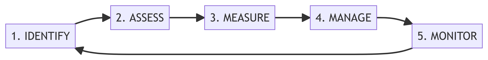
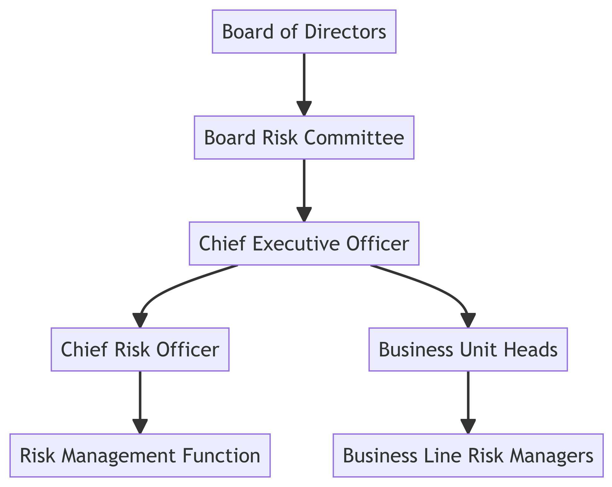
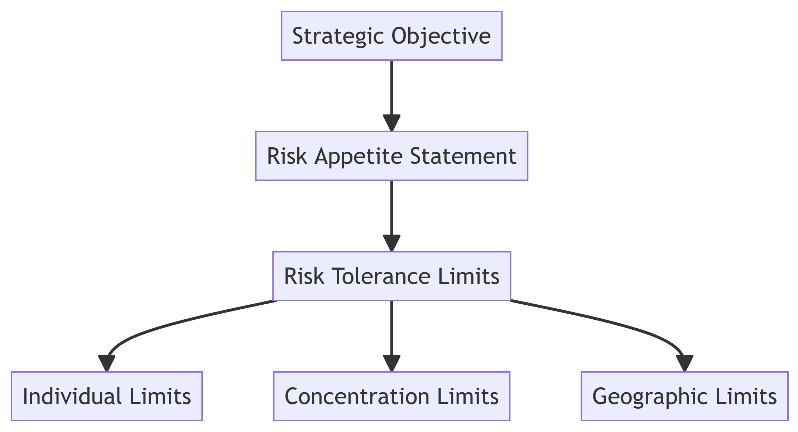

1 Introduction to Risk Management
References
- Pirie, W. L., and M. P. Kritzman. 2017. Derivatives. CFA Institute Investment Series.
- Chapter 6 - Risk Management (Subchapters 1-4)
- CFA Program Curriculum, Level I, Volume 6 - Portfolio Management and Ethical and Professional Standards
- Reading 53 - Introduction to Risk Management
Learning Outcomes:
- Define risk and distinguish between financial risks and non-financial risks
- Apply the five-step risk management process to evaluate and prioritize organizational risks
- Compare the four risk modification strategies and select appropriate responses based on risk appetite and tolerance
- Describe the key components of risk governance including organizational structure, the three lines of defense, and the role of risk culture
- Explain how Enterprise Risk Management (ERM) integrates siloed risks into a holistic framework and apply stress testing to identify vulnerabilities
1.1 Foundational Concepts
1.1.1 What is Risk?
Risk is the exposure to uncertainty that can lead to variation in outcomes, particularly adverse outcomes that result in losses or failure to achieve objectives. Simply put: risk is the possibility that bad things might happen.
The key distinction to understand:
- Uncertainty means we don’t know what will happen
- Risk means we can estimate the probabilities of different outcomes
When we talk about risk in practice, we’re actually referring to three interconnected components:
- Risk Driver - The underlying source of uncertainty (what could change?)
- Risk Position - The amount exposed to that uncertainty (how much is at stake?)
- Risk Exposure - The potential impact from that position (what could we gain or lose?)
Example
Consider a company holding ¥1,000,000 when news from Japan could move the currency by ±1%:
- The risk driver is the ±1% currency movement
- The risk position is ¥1,000,000
- The risk exposure is ±¥10,000 potential impact
1.1.2 Risk Management: Optimization, Not Elimination
Risk management is the process of defining acceptable risk levels, measuring current risk, and adjusting exposure to achieve organizational objectives. The critical insight: risk management aims to optimize value, not minimize risk.
Why? Because risk and return are inseparable. We cannot directly control returns—we can only manage risk to influence expected outcomes. This leads to the fundamental principle of finance: there is no free lunch. Higher returns require accepting higher risks.
Example
Consider these investment options:
- Government Bonds: ~2-3% annual return with minimal risk
- Corporate Bonds: ~5-7% return with moderate default risk
- Startup Equity: 20%+ potential returns with high probability of total loss
The goal isn’t to avoid the startup investment—it’s to understand the risk-return tradeoff and choose appropriately based on objectives and risk tolerance.
1.1.3 The Risk Landscape: Financial and Non-Financial Risks
Organizations face two broad categories of risk that frequently interact and amplify each other.
Financial Risks
Market Risk stems from changes in market prices and rates. Market risk includes equity price movements, interest rate changes, foreign exchange fluctuations, and commodity price volatility.
Credit Risk is the possibility that a counterparty won’t meet their obligations. The challenge with credit risk is its rarity—defaults are infrequent events with limited historical data, requiring estimation through credit spreads, rating models, and financial ratio analysis.
Liquidity Risk manifests in two forms:
- Funding liquidity risk: inability to meet payment obligations
- Market liquidity risk: inability to exit positions without significant losses
The 2008 crisis demonstrated this dramatically when mortgage-backed securities became essentially unsellable at any reasonable price. The risk isn’t just wider bid-ask spreads (a known cost) but the uncertainty of spreads widening unpredictably, especially during stress periods.
Non-Financial Risks
Operational Risk arises from failed processes, people, systems, or external events. These events are typically low-frequency but high-impact, making them difficult to predict and quantify.
Strategic Risk emerges from poor business decisions or flawed execution.
Reputation Risk can destroy value rapidly, especially in our social media age. It often results from other risk events and spreads faster than organizations can respond.
Model Risk occurs when we use wrong models or misapply correct ones. All models simplify reality—the danger comes when we forget these limitations. Models fail in predictable ways.
Tail Risk represents extreme “black swan” events that occur more frequently than normal distributions suggest. These outlier events in the probability distribution’s tails can devastate unprepared organizations.
The Critical Distinction: Systematic vs. Idiosyncratic Risk
Systematic risk affects entire markets or economies—interest rate changes, recessions, geopolitical events. It cannot be diversified away.
Idiosyncratic risk is specific to individual companies or assets. While diversification can reduce it, the 2008 crisis showed how idiosyncratic risks can evolve into systematic ones when individual firm failures trigger system-wide contagion.
1.1.4 Risk Interactions: When 1+1 = 3
Risks rarely occur in isolation. They interact, amplify each other, and cascade through organizations in non-linear ways. The 2008 Financial Crisis provides a textbook cascade:
- Housing prices decline (market risk)
- Mortgage defaults surge (credit risk)
- MBS securities become illiquid (liquidity risk)
- Banks face funding crises (funding liquidity risk)
- Counterparty concerns explode (credit risk amplification)
- System-wide crisis emerges (systemic risk)
This cascade illustrates wrong-way risk—when exposure increases precisely as counterparty credit quality deteriorates. Banks buying credit protection from AIG, which was itself exposed to the same mortgage risks, exemplified this fatal correlation.
Important
The lesson: risk models often fail to capture these interactions, making scenario planning and stress testing essential for identifying potential risk cascades before they occur.
1.2 The Risk Management Process
1.2.1 The Five-Step Risk Management Cycle
Risk management isn’t a one-time exercise—it’s a continuous cycle that integrates risk considerations into every organizational decision. The process flows through five interconnected steps, each building on the previous while feeding back into a continuous loop of improvement.
This cycle operates within a broader framework that provides structure and support:
- Risk Governance establishes the top-down direction, ensuring risk management aligns with organizational objectives.
- Risk Infrastructure provides the people, systems, and analytical tools needed to track and quantify risks.
- Policies and Processes translate high-level risk appetite into operational guidelines and limits.
- The Three Lines of Defense create organizational accountability—business operations own and manage risks, risk management provides oversight, and internal audit offers independent assurance.
Important
A critical insight: while organizations face countless potential risks, they’re typically driven by a small number of key risk factors. Effective risk management focuses on identifying and managing these critical drivers.
1.2.2 Risk Identification—Finding What Could Hurt You
The first challenge is discovering what risks you face. This requires systematic exploration beyond the obvious, because the risks that destroy organizations are often the ones they didn’t see coming.
Effective identification combines multiple approaches. Risk workshops bring together diverse perspectives to brainstorm potential threats. Historical loss analysis examines past failures—both internal and at peer organizations—to identify patterns. Scenario analysis asks “what could go wrong?” and follows the implications through to their logical conclusions. Risk registers provide systematic taxonomies of known risk types, while external benchmarking reveals risks other organizations have identified.
The challenge lies in navigating three categories of risk knowledge:
- Known Knowns: Risks we understand and can quantify (market volatility, credit defaults)
- Known Unknowns: Risks we’re aware of but can’t fully measure (cyber attack severity, pandemic impacts)
- Unknown Unknowns: “Black Swan” events we haven’t imagined
The goal isn’t to identify every conceivable risk—that’s impossible. It’s to cast a wide enough net to catch the risks that could materially impact objectives while remaining alert to signals of emerging unknown risks.
1.2.3 Risk Assessment—Prioritizing What Matters
Not all risks deserve equal attention. Assessment evaluates both the likelihood and potential impact of identified risks to focus resources where they matter most.
The classic risk matrix provides a simple but powerful prioritization tool:
| Likelihood | Low Impact | Medium Impact | High Impact |
|---|---|---|---|
| High | Medium | High | Critical |
| Medium | Low | Medium | High |
| Low | Low | Low | Medium |
High-likelihood, high-impact risks demand immediate attention. Low-likelihood, low-impact risks might be accepted as a cost of doing business. The challenging decisions involve the corners: high-impact but unlikely events (prepare contingency plans) and likely but low-impact events (automate controls).
Assessment isn’t purely mechanical. It requires judgment about probability and impact, consideration of risk velocity (how quickly a risk materializes), and understanding of risk interconnections that could amplify impacts.
1.2.4 Risk Measurement—Quantifying the Unquantifiable
Measurement transforms vague concerns into actionable metrics. Different risk types require different measurement approaches, and choosing the right metric is crucial for effective management.
Foundation metrics apply across risk types:
- Probability distributions show the range of potential outcomes
- Standard deviation measures dispersion, though it assumes normal distributions that rarely exist in practice
- Value-at-Risk (VaR) estimates maximum likely loss at a confidence level
- Conditional VaR reveals average losses beyond the VaR threshold
- Stress testing explores performance under extreme scenarios
Specialized metrics target specific risks:
- For market risk, we use beta to measure systematic risk exposure, duration for interest rate sensitivity, and the “Greeks” for derivatives—delta (price sensitivity), gamma (delta’s rate of change), vega (volatility sensitivity), theta (time decay), and rho (interest rate sensitivity).
- For credit risk, we estimate Probability of Default (PD), Loss Given Default (LGD), and Exposure at Default (EAD). Credit ratings synthesize multiple factors into standardized risk grades.
Key Risk Indicators (KRIs) serve as early warning signals—metrics that change before risks materialize, providing time to respond.
The challenge in measurement is balancing precision with practicality. Perfect measurement is impossible, but approximate measurement that acknowledges uncertainty is far better than no measurement at all.
1.2.5 Risk Management—Choosing Your Response
Once risks are identified, assessed, and measured, organizations must decide how to respond. The four fundamental strategies can be combined for optimal results:
Risk Avoidance eliminates risk by not engaging in the activity. A company might avoid entering politically unstable markets or decline to develop products with uncertain liability. This provides certainty but foregoes potential opportunities. The key question: is what we’re giving up worth the risk we’re avoiding?
Risk Acceptance consciously retains risk, either because it’s unavoidable or because the cost of mitigation exceeds potential losses. This takes two forms. Self-insurance means bearing losses as they occur or setting aside reserves. Diversification spreads risk across uncorrelated exposures, reducing concentration while accepting that some risk remains.
Risk Transfer shifts risk to parties better equipped to bear it. Insurance is the classic mechanism—insurers pool uncorrelated risks from many sources, using the law of large numbers to make aggregate losses predictable. The limitation: insurance becomes expensive or unavailable for risks that affect many parties simultaneously (pandemic, financial crisis).
Risk Shifting uses derivatives to alter risk distribution without transferring ownership. A company might use currency forwards to lock in exchange rates or buy options to limit downside while preserving upside. The choice between forwards (obligation) and options (right but not obligation) depends on whether you want certainty or flexibility.
The decision process starts with a fundamental question: is the risk within our appetite? If yes, we optimize management costs. If no, we must reduce exposure through some combination of the four strategies, considering costs, benefits, risk tolerance, and operational capabilities.
1.2.6 Risk Monitoring—Maintaining Vigilance
Risk management isn’t “set and forget.” Continuous monitoring ensures controls remain effective and strategies stay aligned with changing conditions.
Effective monitoring tracks KRIs against predetermined limits, providing early warning when risks approach unacceptable levels. It regularly updates risk assessments as business conditions change, tests control effectiveness through audits and reviews, runs stress scenarios to verify resilience, and adjusts strategies based on lessons learned.
Risk reporting transforms monitoring data into actionable intelligence. Effective reports share six characteristics:
- Timely—delivered frequently enough for decision-making, which varies by risk type (market risk might need daily reports, strategic risk quarterly)
- Accurate—based on validated data and calculations stakeholders can trust
- Relevant—focused on material risks for the specific audience, avoiding information overload
- Clear—understandable by intended recipients, avoiding unnecessary jargon
- Actionable—enabling informed decisions with clear implications and recommendations
- Comprehensive—covering all material risk areas without gaps that could hide emerging problems
The monitoring phase feeds back into identification, creating a continuous cycle of improvement. New risks emerge, existing risks evolve, and yesterday’s controls become today’s vulnerabilities. Only through constant vigilance can organizations maintain resilience in an uncertain world.
1.3 Governance and Organization
Risk governance transforms risk management from compliance burden into strategic advantage through clear organizational structure and accountability. The hierarchy ensures risk awareness flows from boardroom to operations while information travels upward to inform decisions.

Risk appetite defines what risks an organization willingly accepts pursuing objectives, while risk tolerance sets acceptable variation boundaries. Organizations operationalize these through cascading limits:

Smart organizations set appetite well below capacity, maintaining buffers for unexpected shocks.
Risk budgeting transforms abstract risk appetite into concrete allocations across the organization. Like financial budgeting allocates scarce capital, risk budgeting allocates scarce risk capacity to its most productive uses.
Risk culture—shared attitudes and behaviors around risk—determines whether governance structures actually influence behavior. Strong culture exhibits four pillars: leadership tone from the top, clear accountability with consequences, effective challenge without retaliation, and risk-aligned incentives favoring long-term value over short-term profits. Poor culture reveals itself through profit-at-any-cost focus, suppressed concerns, and risk management viewed as impediment rather than enabler.
Modern risk governance creates value by optimizing risk-return trade-offs, enabling profitable activities others fear, and building competitive advantage through superior risk management. Success requires integration with business strategy, dynamic adaptation to changing conditions, and investment in capabilities matching strategic importance. The goal: risk management so embedded it becomes invisible yet omnipresent, influencing every decision without constraining innovation.
1.4 Modern Applications and Enterprise Risk Management
Enterprise Risk Management (ERM) represents a paradigm shift from isolated risk silos to holistic risk management. Traditional approaches created blind spots at intersections where risks interact and amplify—credit crises become liquidity crises become market crises. ERM acknowledges that organizations are driven by a small number of key risk factors cutting across traditional boundaries.
ERM rests on five interconnected pillars:
- Targets align risk-taking with strategic objectives through enterprise-wide appetite statements and risk-adjusted metrics.
- Structure creates accountability through board oversight and cross-functional committees.
- Identification and Metrics establish common risk language and aggregate measures.
- Strategies optimize risk-return trade-offs at portfolio level.
- Culture embeds risk awareness as organizational mindset rather than isolated function.
Modern risk management looks forward through stress testing that explores extreme conditions. Sensitivity analysis changes single factors, scenario analysis combines multiple changes, and reverse stress testing identifies what could cause failure. Testing uses both historical scenarios (2008 crisis, COVID-19) and hypothetical events (cyber attacks, climate catastrophes) to reveal vulnerabilities that normal metrics miss.
New risk categories demand attention as the world evolves. Climate risk operates through physical damage, transition costs, and stranded assets. Cyber risk grows more sophisticated with cascading systemic impacts. Artificial intelligence creates accountability gaps and amplifies model risk. Regulatory evolution accelerates with dynamic requirements across multiple frameworks (Basel III, Solvency II, COSO).
Important
The fundamental insight: ERM transforms risk from threat to opportunity, from cost to investment, from necessary evil to competitive advantage. Organizations that master ERM don’t eliminate uncertainty—they harness it for sustainable value creation through intelligent risk-taking.
1.5 Practice Questions and Problems
Exercise 1: Risk Components
Identify the risk components:
- Risk Driver: What uncertain factor is creating the risk?
- Risk Position: What is your stake/exposure in this situation?
- Risk Exposure: What is the dollar amount potentially at stake?
Scenario A: Currency Risk
You work for a German company that just signed a contract to receive $1,000,000 from a US client in 3 months. Today’s exchange rate is €1 = $1.10, but it could move to anywhere between $1.00 and $1.20.
Scenario B: Interest Rate Risk
Your company has a €5,000,000 loan with a variable interest rate, currently at 4%. The rate is reviewed every 6 months and could move ±2%.
Based on these two examples, how do the three risk components (driver, position, exposure) work together to create overall risk?
Exercise 2: Risk Identification
Review the real events from recent years provided below. For each event, complete the following:
- Identify all types of risks present in each event. Consider multiple perspectives - what could potentially go wrong for various stakeholders involved?
- Classify the identified risks into these four categories:
- Financial/Market Risks
- Operational/Process Risks
- Human/Behavioral Risks
- Technology/System Risks
This exercise helps develop pattern recognition skills for identifying and categorizing different risk types across real-world scenarios.
Event 1: Silicon Valley Bank Collapse (March 2023)
SVB focused heavily on tech startups and held many long-term government bonds. When interest rates rose, bond values fell. The bank announced losses, customers panicked, and $42 billion was withdrawn in one day via mobile banking.
Event 2: Ever Given Ship (March 2021)
A container ship got stuck in the Suez Canal for 6 days, blocking 12% of global trade. Oil prices rose, supply chains were disrupted, and some companies couldn’t deliver products.
Event 3: GameStop Stock Surge (January 2021)
Reddit users coordinated to buy GameStop stock, driving the price from $20 to $347. Hedge funds that bet against the stock lost billions. Some trading apps restricted purchases.
Exercise 3: Risk Dominos
Pick ONE of the scenarios below and trace how problems might spread. Think about how one problem leads to the next:
- Week 1: Original event happens
- Week 2: What happens next?
- Week 3: What new problems emerge?
- Week 4: How does it spread further?
- Week 5: What’s the final impact?
Critical Thinking Questions:
- Which step was hardest to predict?
- At what point could the company have stopped the cascade?
- What does this tell you about managing risk?
Scenario A: Cyber Attack
A major bank’s computer systems are hacked, and customer data is stolen.
Scenario B: CEO Scandal
The CEO of a major company is arrested for fraud.
Scenario C: Factory Fire
Your company’s main manufacturing plant burns down.
Exercise 4: The Coffee Shop Dilemma
You’re opening a coffee shop near campus. You’ve identified these potential problems:
- Competitor opens next door: High chance, medium impact
- Coffee prices double: Low chance, high impact
- Students switch to energy drinks: Medium chance, medium impact
- Your espresso machine breaks: High chance, low impact
- Campus shuts down (like COVID): Very low chance, very high impact
Suggest suitable solutions:
- Rank these risks from 1-5 (1 = deal with first, 5 = worry about last)
- For your top 3 risks, what would you do and why? For each one, you can:
- Avoid it (don’t do things that create the risk)
- Accept it (live with it, maybe save money just in case)
- Transfer it (get someone else to bear the risk - like insurance)
- Reduce it (take action to make it less likely or less damaging)
Exercise 5: The Risk Management System
Imagine you’re hired as “Chief Risk Officer” for a tech startup. The CEO says: “Just make sure nothing bad happens to us.”
- What would you tell the CEO about their request? What’s realistic and what isn’t?
The CEO is more reasonable now. They want you to “manage risks systematically.” Design your approach:
- What’s the very first thing you’d do?
- What comes next?
- How would you measure things?
- What actions would you take?
- How would you keep watching?
Who should be responsible for risk management in the company?
- Just the risk manager
- Senior management
- All employees
- Board of directors
- External consultants
Exercise 6: Putting It All Together
Think about everything you’ve worked through today. In your own words, define:
- Risk
- Risk Management
Think of a major financial decision you’ve made (or will make soon) - buying a car, choosing a university, taking a job, etc.
- What risks did/do you face?
- How did/will you manage them?
You’re in a job interview for a finance position. The interviewer asks: “Why should companies care about risk management?” Explain your opinion in 60s.